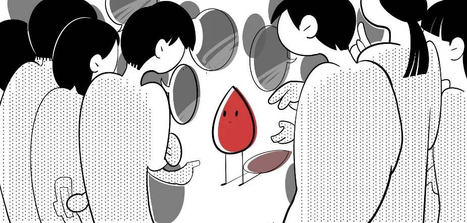

任何性别都应了解月经
Everyone should understand menstruation
Do you think menstrual equality
only concerns women? 你觉得月经平等问题只关乎女性吗？
only concerns women? 你觉得月经平等问题只关乎女性吗？
Do you think current public toilets
are period-friendly? 你认为现时的公厕是否月经友善？
are period-friendly? 你认为现时的公厕是否月经友善？
Have you ever suspected someone of faking period pain to take leave?
你是否曾经怀疑别人假装痛经请假？
Do you feel awkward discussing periods with family?
你觉得与家人谈论月经尴尬吗？
Have you ever thought someone's bad mood was due to their period?
你是否曾认为别人的坏情绪是受月经影响？
每个『是』都可能反映了您
对月经或者来经者在日常生活中需面对的问题的一些假设、偏见或盲点。Each "YES" might have revealed a particular
assumption, bias or blind spot you have
towards menstruation and the issues people who menstruate face in their daily lives.